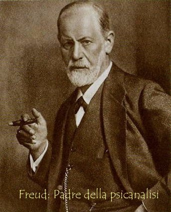

Il rapporto tra Svevo
e la psicanalisi non avviene tanto sul piano delle teorie scientifiche:
a differenza di Saba, che rivelò una fede incrollabile verso i contenuti
di queste nuove teorie, Svevo mostrò verso la terapia psicanalitica
un atteggiamento contrastante e denso di incertezze.
Di
fatto la psicanalisi penetrò a Trieste verso i primi anni del Novecento,
e Svevo vi si accostò con curiosità e interesse, ma anche
con la sua naturale ironia. Negli anni del cosiddetto silenzio, cioè
dopo la pubblicazione di Senilità, a Svevo, sono parole sue, “capitarono,
non voluti da lui, due avvenimenti veramente letterari ch’egli accolse
senza sospetto non sapendoli tali”: l’incontro con Joyce e la lettura di
alcune opere di Freud.
Una questione del tutto
aperta è quella che riguarda la cronologia di questo incontro: in
alcune lettere, nel Soggiorno londinese (1926) e nel Profilo autobiografico
(1928), le date che si riferiscono alla lettura di Freud non coincidono
quasi mai. La più antica si colloca nel 1908 (“Lessi dei libri di
Freud nel 1908 se non sbaglio”, scrive nel Soggiorno londinese), la più
recente invece nel 1918. Allo scrittore Valerio Jahier, con cui Svevo fu
in contatto epistolare dopo la pubblicazione della Coscienza di Zeno, scrive
invece di avere conosciuto “una quindicina d’anni or sono [...] l’opera
del Freud”, e inoltre precisando: “Grande uomo quel nostro Freud ma più
per i romanzieri che per gli ammalati” (lettera del 10 dicembre 1927).
È probabile, in sostanza, che riferimenti così incerti possano
essere ricondotti alla lettura di opere diverse, avvenuta in tempi successivi.
Più complessi
sono invece gli sviluppi e gli esiti culturali di quelle letture. È
vero che nelle lettere a Jahier e in molte altre occasioni Svevo tende
a sconfessare la psicanalisi, a distaccarsi da essa per ribadire l’autonomia
letteraria dei suoi romanzi, ma è anche vero che la psicanalisi
non lo “abbandonò più”, come scrive nel Soggiorno londinese.
Se da un lato Svevo ridimensionava
gli ottimismi della psicoterapia, dall’altro non faceva che rafforzare
l’ipotesi che la psicanalisi poteva offrire alla narrativa un valido presupposto
ideologico per scardinare le basi del determinismo letterario del romanzo
naturalista e verista. La realtà del profondo, se non poteva essere
del tutto chiarita e risolta a livello terapeutico, poteva invece risultare
determinante nell’elaborazione di una poetica moderna. La psicanalisi diventa
perciò elemento portante del fatto letterario e della narrazione:
Zeno ne è l’esempio più evidente, anche se oggi una
parte della critica (Orlando, Lavagetto, Saccone) ha fortemente ridimensionato
una certa interpretazione della Coscienza come autentico romanzo psicanalitico.
Del resto lo stesso Svevo aveva scritto a questo proposito di avere giocato
con questa scienza senza troppo andare per il sottile rispettandone i fondamenti
scientifici: nel Soggiorno londinese, ricordato sopra, Svevo tendeva a
ridurre sulla sua opera l’influenza della psicanalisi. Scrisse infatti
che “noi romanzieri usiamo baloccarci con grandi filosofie e non siamo
certo atti a chiarirle: le falsifichiamo ma le umanizziamo”: confermando
in realtà un uso del tutto sui generis della psicanalisi, Svevo
la piegava ai suoi interessi e alla strategia di uno scardinamento della
narrativa realista ottocentesca. La psicanalisi diviene pertanto un’architettura
filosofica, un metodo di lavoro e di auto-esplorazione, un impianto strutturale
del romanzo, il presupposto necessario per creare un’atmosfera di rottura
della trama oggettiva e per incrinare le certezze morali, economiche e
sociali del personaggio-uomo del romanzo ottocentesco.
Ciò che interessava
a Svevo nella Coscienza di Zeno era
soprattutto l’indagine aperta nei meandri nascosti dell’inconscio, la decifrazione
degli “atti mancati” (il più importante di tutti è quello
che riguarda l’ultima sigaretta), gli scacchi mentali del personaggio:
la psicanalisi rappresentava in questo senso una novità ideologica
da utilizzare letterariamente, una riprova scientifica, un punto d’appoggio.